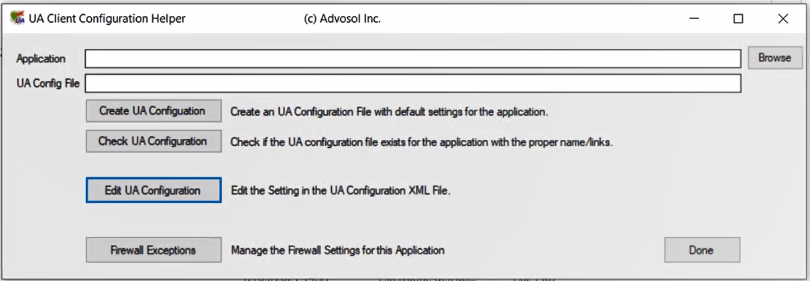
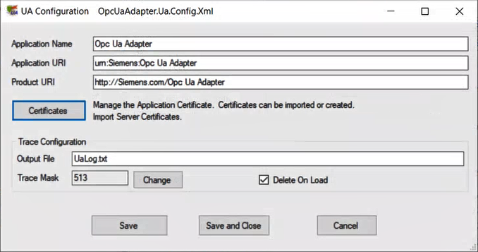
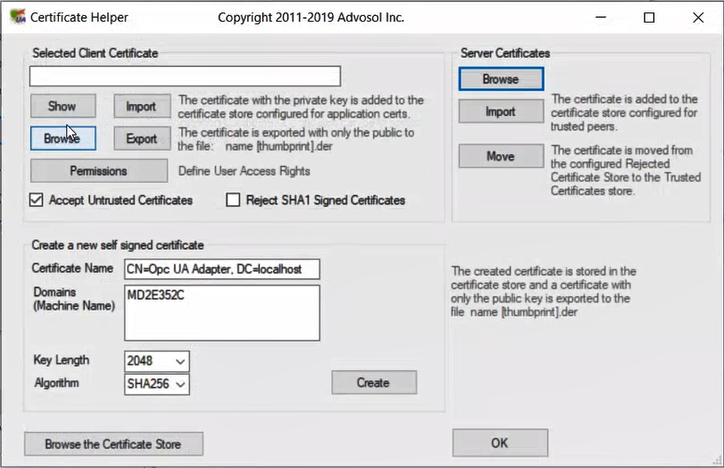

Troubleshooting Application Certificates
To allow secure communication between the Desigo CC OPC UA client and the OPC UA third-party server both the client and the server certificates are required.
For more details about client authentication and how to trust clients with certificates, see the OPC Foundation reference documentation: OPC UA Security Model for Administrators Whitepaper Version 1.00.
In case of issues (such as, re-creating the Desigo CC OPC UA client certificate or importing manually an OPC third-party server certificate is required), see the instruction steps below.
Start the OPC UA Client Configuration Utility
- The adapter was installed and started. See Installing and Starting the OPC UA Client Adapter.
- In Siemens\OPC UA Adapter, run as administrator UaClientConfigHelperNet4.exe.
- The UA Client Configuration Helper dialog box displays on the screen.
NOTE: During the OPC UA Client setup, the application configuration file is also created. In addition, the settings relevant to the communication ports opened in the firewall are also automatically set.

Set the Application
- To select the application, In the UA Client Configuration Helper dialog box, click Browse.
- In the Open dialog box, select OpcUaAdapter.exe, and then click Open.
- The path of selected application displays in the Application field. The path of the relevant XML configuration file displays in the UA Config File field.
Edit UA Configuration
- Click Edit UA Configuration.
- The UA Configuration dialog box displays.

Modify Trace Configuration
- In the Trace Configuration section, modify one or more of the following settings, and then click Save:
- In the Output field, specify a different name for the trace file.
- Click Change and set the tracing information to include in the trace file.
- Select the Delete On Load check box, if you want to delete the trace file each time the application is loaded.
Edit Application Certificates
- To manage the application certificates that must be configured for the Windows certificate store, click Certificates.
- The Certificate Helper dialog box displays.

Modify Client Certificates
- Do one of the following:
- To select a certificate from one of the available locations and stores:
a. Click Browse for Certificate Store.
b. In the Certificate Store Browser dialog box, select the following settings: Store Location (LocalMachine or Current User), Store Name, and a certificate from the list.
c. Click Select. - To select a certificate from the local applications store:
a. In the Selected Client Certificate section, click Browse. (The Certificate Store Browser dialog box displays. Store Location is set to LocalMachine, while Store Name is set to UA Applications.)
b. Select a certificate from the list.
c. Click Select to display the name of the selected certificate in the Selected Client Certificate field. - To import a certificate file with private key:
a. In the Selected Client Certificate section, click Import.
b. in the Open dialog box, select the certificate DER file to import.
c. In the Certificate Password dialog box, enter the password, and then click OK.
This certificate will be added to the UA Applications certificate store. - To display the details of the selected certificate, in the Selected Client Certificate section, click Show.
- To define the use account rights:
a. Click Permissions.
b. Specify whether untrusted certificates are accepted (Accept Untrusted Certificates).
c. Specify whether SHA1 signed certificates are rejected (Reject SHA1 Signed Certificates). - To export the selected certificate with the public key only to a DER file, click Export.
- To generate a new certificate, in the Create a new self signed certificate section, click Create.
NOTE: This feature might be useful to renew certificates due to expire. - The name of the newly created certificate displays in the Selected Client Certificate field. The new certificate is stored into the UA Applications store, while a certificate with the public key only is exported to a DER file.
Modify Server Certificates
The OPC UA web client application has a list of server trusted certificates.
- To modify those settings, in the Server Certificates, do one of the following:
- Click Browse, and in the Certificate Store Browser dialog box, do the following:
a. Select the certificate that corresponds to the server with which the communication must be established.
b. Click Select. - Click Import, and in the Open dialog box, do the following:
a. Select the certificate DER file to import.
b. Click Open. (The selected certificate will be added to the store configured for trusted peers.) - Untrusted server certificates are stored into the Rejected UA Certificate store.
To transfer an untrusted certificate to the Trusted Certificate store, do the following:
a. Click Move. (The Certificate Store Browser dialog box displays. Store Location is set to LocalMachine, while Store Name is set to Rejected UA Certificate.)
b. From the list, select the untrusted certificate to transfer.
c. Click Select.